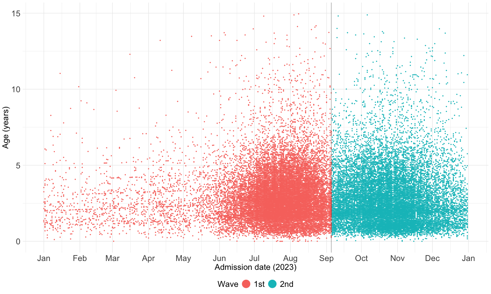
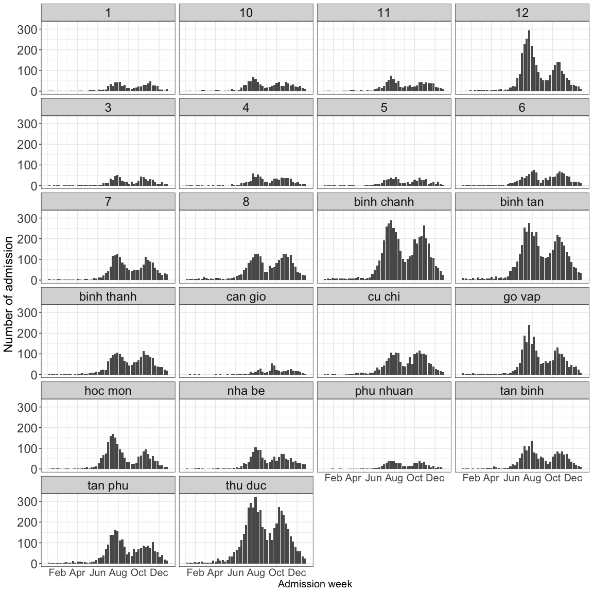
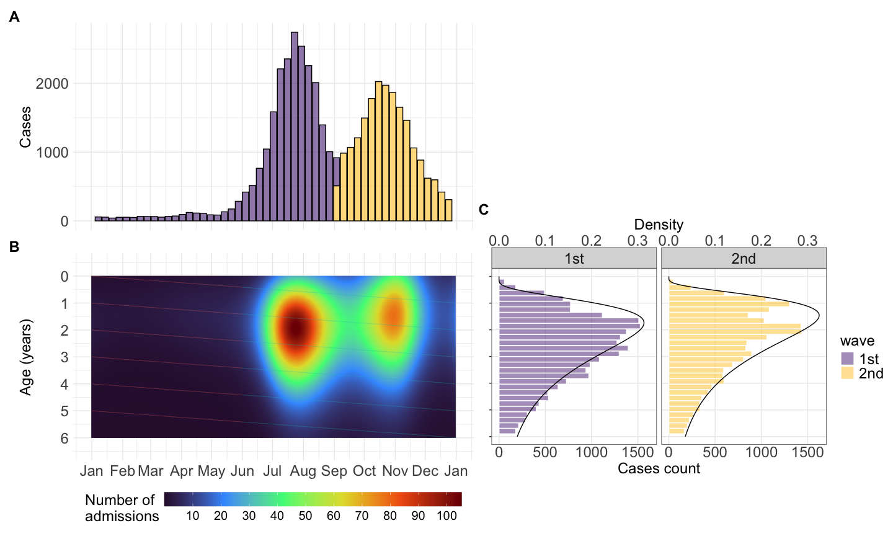
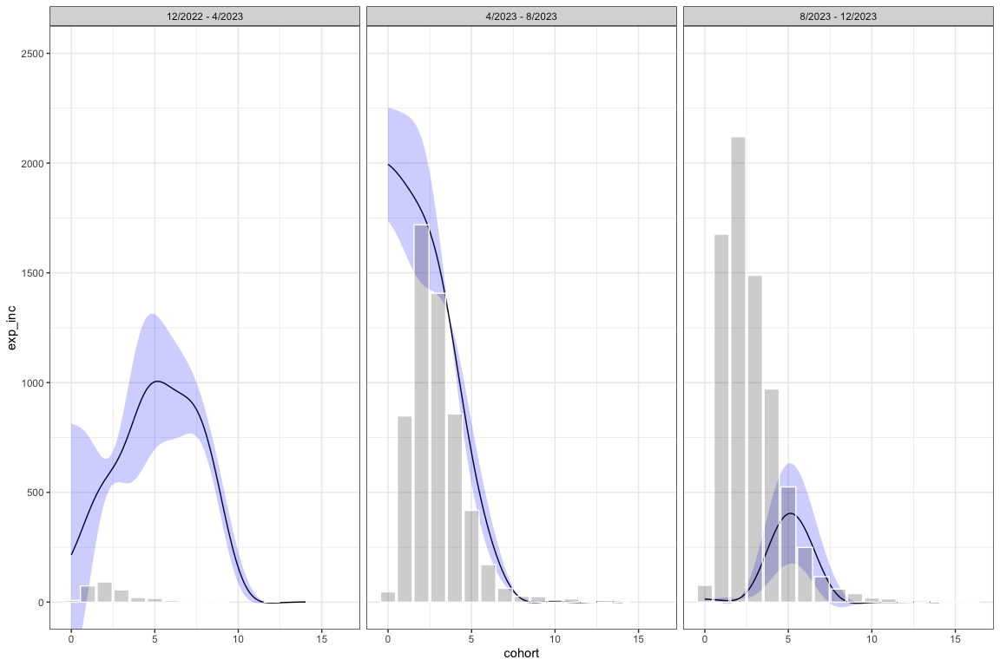

required <- c(
"readxl",
"magrittr",
"lubridate",
"janitor",
"tidyverse",
"stringi",
"stringr",
"gtsummary",
"zoo",
"patchwork",
"cluster",
"factoextra",
"fitdistrplus",
"mgcv",
"scam"
)2 Manuscript figures
2.1 Library
Required packages:
Installing those that are not installed yet:
to_install <- required[!required %in% installed.packages()[, "Package"]]
if (length(to_install))
install.packages(to_install)Loading the packages for interactive use:
invisible(sapply(required, library, character.only = TRUE))2.2 Constant
user <- Sys.getenv("USER")
if (user == "nguyenpnt") {
path2data <- paste0(
"/Users/nguyenpnt/Library/CloudStorage/OneDrive-OxfordUniversityClinicalResearchUnit/Data/HFMD/cleaned/"
)
}
# Name of cleaned HFMD data file
cases_file <- "hfmd_hcdc.rds"
# Name of cleaned sero file
sero_file <- "sero_EV-A71_1222-1223.rds"
# Name of cleaned viro file
viro_file <- "virology_cleaned.rds"
# Name of outpatient data file
ch1_outpatient <- "CH1_outpatient_HCM_cleaned.rds"2.3 Functions
Function to read data
readRDS2 <- function(x) readRDS(paste0(path2data, x))Function for table 1
calculate_prop_test <- function(data, variable, by, ...) {
# subset to non-missing
data <- tidyr::drop_na(data, dplyr::all_of(c(variable, by)))
prop.trend.test(
x = table(data[[variable]], data[[by]])[2, ], # get the second row (the positive row)
n = table(data[[by]])
) |>
broom::tidy()
}Overide select funtion
select <- dplyr::selectFunction to create the cohort lines
cohort_lines <- function(cohort_ages = seq(0, 5, by = 1),viro = FALSE){
start_date <- as.Date("2023-01-01")
end_date <- as.Date("2023-12-31")
## generate the cohort line
tseq <- seq(start_date, end_date, by = "day")
cohort_lines <- lapply(cohort_ages, function(a0){
data.frame(
date = tseq,
age = a0 + as.numeric(tseq - start_date) / 365,
cohort = as.factor(a0)
)
}) |> dplyr::bind_rows()
color_cohort <- ifelse(viro == TRUE,"black","#80FFFFFF")
## create mid-opacity white of cohort lines before June
cohort_lines <- cohort_lines |>
mutate(trend = case_when(
date < as.Date("2023-06-01") ~ color_cohort,
date >= as.Date("2023-06-01") ~ "#FFFFFFFF",
))
cohort_lines$group <- consecutive_id(cohort_lines$trend)
cohort_lines <- head(do.call(rbind, by(cohort_lines, cohort_lines$group, rbind, NA)), -1)
cohort_lines[, c("trend", "group")] <- lapply(cohort_lines[, c("trend", "group")], na.locf)
cohort_lines[] <- lapply(cohort_lines, na.locf, fromLast = T)
cohort_lines$trend <- factor(cohort_lines$trend,
levels = c(color_cohort,"#FFFFFFFF"))
cohort_lines
}Constrained algorithm for serological data
age_profile_constrained_cohort2 <- function(data,
age_values = seq(0, 15, le = 512),
ci = .95,
n = 100) {
predict2 <- function(...)
predict(..., type = "response") |> as.vector()
age_profile <- function(data,
age_values = seq(0, 15, le = 512),
ci = .95) {
model <- gam(pos ~ s(age), binomial, data)
link_inv <- family(model)$linkinv
df <- nrow(data) - length(coef(model))
p <- (1 - ci) / 2
model |>
predict(list(age = age_values), se.fit = TRUE) %>%
c(list(age = age_values), .) |>
as_tibble() |>
mutate(
lwr = link_inv(fit + qt(p, df) * se.fit),
upr = link_inv(fit + qt(1 - p, df) * se.fit),
fit = link_inv(fit)
) |>
dplyr::select(-se.fit)
}
age_profile_unconstrained <- function(data,
age_values = seq(0, 15, le = 512),
ci = .95) {
data |>
group_by(collection) |>
group_map( ~ age_profile(.x, age_values, ci))
}
shift_right <- function(n, x) {
if (n < 1)
return(x)
c(rep(NA, n), head(x, -n))
}
dpy <- 365 # number of days per year
mean_collection_times <<- data |>
group_by(collection) |>
summarise(mean_col_date = mean(col_date2)) |>
with(setNames(mean_col_date, collection))
cohorts <- cumsum(c(0, diff(mean_collection_times))) |>
divide_by(dpy * mean(diff(age_values))) |>
round() |>
map(shift_right, age_values)
age_time <- map2(mean_collection_times,
cohorts,
~ tibble(collection_time = .x, cohort = .y))
age_time_inv <- age_time |>
map( ~ cbind(.x, age = age_values)) |>
bind_rows() |>
na.exclude()
data |>
# Step 1:
group_by(collection) |>
group_modify( ~ .x |>
age_profile(age_values, ci) |>
mutate(across(c(fit, lwr, upr), ~ map(
.x, ~ rbinom(n, 1, .x)
)))) |>
group_split() |>
map2(age_time, bind_cols) |>
bind_rows() |>
unnest(c(fit, lwr, upr)) |>
pivot_longer(c(fit, lwr, upr), names_to = "line", values_to = "seropositvty") |>
# Step 2a:
filter(cohort < max(age) - diff(range(mean_collection_times)) / dpy) |>
group_by(cohort, line) |>
group_modify(
~ .x %>%
scam(seropositvty ~ s(collection_time, bs = "mpi"), binomial, .) |>
predict2(list(collection_time = mean_collection_times)) %>%
tibble(collection_time = mean_collection_times, seroprevalence = .)
) |>
ungroup() |>
group_by(collection_time, line) |>
group_modify( ~ .x |>
mutate(across(
seroprevalence, ~ gam(.x ~ s(cohort), betar) |>
predict2()
))) |> ### modified
ungroup() |>
pivot_wider(names_from = line, values_from = seroprevalence) |>
group_by(collection_time) |>
group_split()
}2.4 Data
Serological data:
df_sero <- readRDS2(sero_file)Virological data:
df_viro <- readRDS2(viro_file) %>%
mutate(pos = case_when(
sero_gr == "EV-A71" ~ TRUE,
sero_gr != "EV-A71" ~ FALSE),
pos_cv = case_when(
sero_gr == "CV-A6" ~ TRUE,
sero_gr != "CV-A6" ~ FALSE),
peak = case_when(
month(admission_date) >= 6 & month(admission_date) <= 8 ~ "6/2023 - 8/2023",
month(admission_date) >= 9 ~ "9/2023 - 12/2023"
),
adm_week = as.Date(floor_date(admission_date, "week")),
adm_month = as.Date(floor_date(admission_date, "month")),
time = as.numeric(admission_date)
)CH1 outpatient data:
ch1_outpatient <- readRDS2(ch1_outpatient)Case report data:
df23 <- cases_file |>
readRDS2() |>
dplyr::select(dob, admission_date, district, inout, severity, medi_cen) |>
filter(year(admission_date) == 2023) |>
filter_out(is.na(dob)) |>
unique() |>
mutate(across(severity, ~ case_when(is.na(.x) ~ "Undefined",
severity %in% c("3", "4") ~ "3 or 4",
.default = severity) |> as.factor()),
across(medi_cen, ~ tolower(stri_trans_general(.x, "Latin-ASCII"))),
across(medi_cen,
~ case_when(.x == "benh vien nhi dong 1" ~ "Children's hospital 1",
.x == "benh vien benh nhiet doi tphcm" ~
"Hospital of Tropical Diseases",
.x == "benh vien nhi dong 2" ~ "Children's hospital 2",
.x == "benh vien nhi dong thanh pho" ~
"City Children's hospital", .default = .x)),
age1 = interval(dob, admission_date) / years(1),
time = as.numeric(admission_date),
adm_week = as.Date(floor_date(admission_date, "week")),
age = round(age1))2.5 Analysis
2.5.1 K-mean
Using k-mean clustering algorithm to separate 2 waves
set.seed(123)
kmeans_result_1 <- kmeans(df23[, c("age1", "time")], centers = 2, nstart = 25)
df23$wave <- factor(kmeans_result_1$cluster,
labels = c("1st", "2nd"),
levels = c(2, 1))
## show the time point that seperate two peaks
time_cut_1st <- df23 |>
filter(wave == "1st") |>
pull(time) |>
max()
time_cut_2nd <- df23 |>
filter(wave == "2nd") |>
pull(time) |>
min()
time_cut <- mean(time_cut_1st, time_cut_2nd) |> as.numeric()
time_cut[1] 19605So I selected time points at 1.9605^{4} to seperate two peaks
df23 |>
filter(age1 <= 15) |>
ggplot(aes(x = admission_date, y = age1, color = wave)) +
geom_point(size = .5) +
scale_x_datetime(date_breaks = "1 month" , date_labels = "%b") +
theme_minimal() +
geom_vline(xintercept = as.Date(time_cut), linewidth = .2) +
labs(x = "Admission date (2023)", y = "Age (years)") +
guides(color = guide_legend(override.aes = list(size = 8), title = "Wave")) +
theme(
axis.title.x = element_text(size = 18),
axis.text.x = element_text(size = 18),
axis.ticks.x = element_blank(),
legend.position = "bottom",
axis.title.y = element_text(size = 18),
axis.text.y = element_text(size = 18),
legend.text = element_text(size = 18),
legend.title = element_text(size = 18)
)
ggsave(
"./fig_manuscript/sup2_new.svg",
width = 15,
height = 9,
dpi = 500
)
ggsave(
"./fig_manuscript/sup2_new.png",
width = 15,
height = 9,
dpi = 500
)2.5.2 Description table
### table1
tab_age <-
df23 |>
tbl_summary(by = wave,
label = list(age1 ~ "Age (Years)"),
digits = list(all_continuous() ~ c(2,2),
all_categorical() ~ c(0,2)),
include = c(age1)) |>
remove_row_type(type = "missing")
tab_sev <-
df23 |>
filter(severity != "Undefined") |>
dplyr::select(wave, severity) |>
mutate(rn = row_number()) |>
tidyr::spread(severity, severity) |>
mutate(across(-c(wave, rn), ~ ifelse(is.na(.), 0, 1))) |>
dplyr::select(-rn) |>
tbl_summary(by = wave,
statistic = list(
all_categorical() ~ "{n} / {N} ({p}%)"
),
digits = all_categorical() ~ c(0,0,2)) |>
modify_table_body(
~ .x |>
mutate(row_type = "level",
variable = "wave") %>%
{bind_rows(
tibble(variable = "wave", row_type = "label", label = "Severity"),
.
)}
)
tab_inout <-
df23 |>
filter(inout %in% c("Inpatient","Outpatient")) |>
select(wave, inout) |>
mutate(rn = row_number()) |>
tidyr::spread(inout, inout) |>
mutate(across(-c(wave, rn), ~ ifelse(is.na(.), 0, 1))) |>
select(-rn) |>
tbl_summary(by = wave,
statistic = list(
all_categorical() ~ "{n} / {N} ({p}%)"
),
digits = all_categorical() ~ c(0,0,2)) |>
modify_table_body(
~ .x |>
mutate(row_type = "level",
variable = "wave") %>%
{bind_rows(
tibble(variable = "wave", row_type = "label", label = "Treatment"),
.
)}
)
final_table <- tbl_stack(list(tab_age, tab_sev, tab_inout),quiet = TRUE)
final_table| Characteristic | 1st N = 23,2151 |
2nd N = 19,9581 |
|---|---|---|
| Age (Years) | 2.66 (1.78, 3.75) | 2.35 (1.51, 3.68) |
| Severity | ||
| 1 | 5,200 / 8,191 (63.48%) | 4,168 / 5,787 (72.02%) |
| 2A | 2,445 / 8,191 (29.85%) | 1,454 / 5,787 (25.13%) |
| 2B | 415 / 8,191 (5.07%) | 128 / 5,787 (2.21%) |
| 3 or 4 | 131 / 8,191 (1.60%) | 37 / 5,787 (0.64%) |
| Treatment | ||
| Inpatient | 3,151 / 22,424 (14.05%) | 2,425 / 19,510 (12.43%) |
| Outpatient | 19,273 / 22,424 (85.95%) | 17,085 / 19,510 (87.57%) |
| 1 Median (Q1, Q3) | ||
Table 1: Demographic and clinical characteristics of reported HFMD cases in Ho Chi Minh City in 2023.
2.5.3 Geography
df23 %>%
group_by(adm_week, district) %>%
count() %>%
ggplot(aes(x = adm_week, y = n)) +
geom_col() +
scale_x_date(
date_breaks = "2 months",
date_labels = "%b",
name = "Admission week",
limits = c(as.Date("2023-01-01"), as.Date("2023-12-31"))
) +
theme_bw() +
labs(y = "Number of admission") +
facet_wrap( ~ district, ncol = 4) +
theme(
axis.title.x = element_text(size = 15),
axis.text.x = element_text(size = 15),
axis.ticks.x = element_blank(),
legend.position = "none",
plot.tag = element_text(face = "bold", size = 18),
axis.title.y = element_text(size = 18),
axis.text.y = element_text(size = 18),
strip.text.x = element_text(size = 18)
)
ggsave(
"./fig_manuscript/sup1_new.svg",
width = 12,
height = 12,
dpi = 500
)2.5.4 Age distribution
Code to plot time series cases
## figure 1a: time series cases
f1a <- df23 |>
group_by(adm_week,wave) |>
count() |>
ungroup() |>
ggplot(aes(x = adm_week, y = n,fill = wave))+
geom_col(alpha = 0.6,color="black")+
scale_x_date(date_breaks = "1 month",
date_labels = "%b",
name = "Admission date (2023)",
limits = c(as.Date("2023-01-01"),as.Date("2023-12-31")))+
# geom_vline(xintercept = as.Date(time_cut))+
scale_fill_manual(values = c("#582C83FF","#FFC72CFF"))+
theme_minimal()+
labs(y = "Cases",tag = "A")+
theme(axis.title.y = element_text(size = 18),
axis.title.x = element_blank(),
axis.ticks.x = element_blank(),
legend.position = "bottom",
plot.tag = element_text(face = "bold", size = 18),
axis.text.x = element_blank(),
axis.text.y = element_text(size = 18),
legend.text = element_text(size = 15),
legend.title = element_text(size = 18))+
guides(fill = guide_colourbar(barwidth=20),
color = "none")Code to fit GAM to age distribution
## aggregate number of admission cases overtime
df_smooth <- df23 |>
mutate(age3 = floor(age1)) |>
group_by(admission_date, age3) |>
summarize(n = n(), .groups = "drop") |>
complete(age3, admission_date, fill = list(n = 0)) |>
mutate(
age = as.numeric(age3),
time = as.numeric(admission_date) # convert to numeric scale
)
## gam formular with tensor-product
fit_gau_bs <- gam(
n ~ s(age, bs = "bs") +
s(time, bs = "bs") +
ti(age, time, bs = c("bs", "bs")) ,
data = df_smooth,
family = gaussian(link = "log"),
method = "REML"
)
## create data for predict
age_val <- seq(0, 6, le = 365)
collection_date_val <- seq(min(df23$adm_week), max(df23$adm_week), le = 365)
new_data <- expand.grid(age = age_val, time = as.numeric(collection_date_val))
## predict
new_data$pred_gau_bs <- predict(fit_gau_bs, newdata = new_data, type = "response")
f1b_new <- ggplot(new_data) +
geom_raster(aes(x = as.Date(time), y = age, fill = pred_gau_bs), interpolate = TRUE) +
geom_line(
data = cohort_lines(),
aes(
x = date,
y = age,
group = cohort,
color = trend
),
linewidth = 0.3,
alpha = 0.4
) +
scale_x_date(date_breaks = "1 month", date_labels = "%b") +
scale_fill_viridis_c(option = "turbo", n.breaks = 10) +
theme_minimal() +
labs(x = "Admission date",
y = "Age (years)",
fill = "Number of\nadmissions",
tag = "B") +
theme_minimal() +
scale_y_reverse(name = "Age (years)",
lim = rev(c(-0.5, 6.5)),
breaks = seq(-1, 7)) +
theme(
axis.title.y = element_text(size = 18),
axis.title.x = element_blank(),
axis.ticks.x = element_blank(),
legend.position = "bottom",
plot.tag = element_text(face = "bold", size = 18),
axis.text.x = element_text(size = 18),
axis.text.y = element_text(size = 18),
legend.text = element_text(size = 15),
legend.title = element_text(size = 18)
) +
guides(fill = guide_colourbar(barwidth = 25), color = "none")Fiting age distribution as a function of binary time variable
fit1 <- fitdist(df23 %>% filter(age1 > 0 &
wave == "1st") %>% pull(age1), "lnorm")
fit2 <- fitdist(df23 %>% filter(age1 > 0 &
wave == "2nd") %>% pull(age1), "lnorm")
x_vals <- seq(0, 7, le = 512)
fit_1p <- data.frame(
wave = "1st",
age = x_vals,
density = dlnorm(
x_vals,
meanlog = fit1$estimate[1],
sdlog = fit1$estimate[2]
)
)
fit_2p <- data.frame(
wave = "2nd",
age = x_vals,
density = dlnorm(
x_vals,
meanlog = fit2$estimate[1],
sdlog = fit2$estimate[2]
)
)
f1c_new <- ggplot(data = df23) +
geom_histogram(aes(x = age1, fill = wave),
color = "white",
alpha = .5) +
scale_fill_manual(values = c("#582C83FF", "#FFC72CFF")) +
geom_line(data = rbind(fit_1p, fit_2p), aes(x = age, y = density * 5000)) +
facet_wrap( ~ wave) +
scale_x_reverse(
limit = c(6, 0),
breaks = seq(0, 6, by = 1),
minor_breaks = NULL
) +
scale_y_continuous(
minor_breaks = NULL,
name = "Cases count",
sec.axis = sec_axis(trans = ~ . / 5000, name = "Density")
) +
coord_flip() +
theme_bw() +
labs(x = "Age", y = "Density", tag = "C") +
theme(
axis.title.y = element_blank(),
axis.ticks.x = element_blank(),
# legend.position = "top",
plot.tag = element_text(face = "bold", size = 18),
axis.title.x = element_text(size = 18),
axis.text.y = element_blank(),
axis.text.x = element_text(size = 18),
legend.text = element_text(size = 18),
strip.text = element_text(size = 18),
legend.title = element_text(size = 18)
)((f1a | plot_spacer()) /
(f1b_new | wrap_elements(full = f1c_new +
theme(
plot.margin = margin(-40, 0, 67, 0)
)))
)+
plot_layout(widths = c(1,1))
ggsave("./fig_manuscript/fig1_new2.svg",
width = 15,height = 9,dpi = 500)2.5.5 Age distribution of CH1
df_cases_ch1_23 <- df23 |>
filter(medi_cen == "Children's hospital 1")
## fig 2C
ts_ch1 <- df_cases_ch1_23 %>%
group_by(adm_week, wave) %>%
count() %>%
ggplot(aes(x = adm_week, y = n, fill = wave)) +
geom_col(alpha = 0.6, color = "black") +
scale_x_date(
date_breaks = "1 month",
date_labels = "%b %Y",
name = "Collection date",
limits = c(as.Date("2023-01-01"), as.Date("2023-12-31"))
) +
scale_y_continuous(limits = c(0, 900), breaks = seq(0, 900, le = 4)) +
scale_fill_manual(values = c("#582C83FF", "#FFC72CFF")) +
theme_minimal() +
annotate(
"rect",
fill = "grey",
xmin = as.Date(c(
"2023-01-01", "2023-04-05", "2023-08-02", "2023-12-06"
)),
xmax = as.Date(c(
"2023-01-15", "2023-04-26", "2023-08-30", "2023-12-27"
)),
ymin = 0,
ymax = Inf,
alpha = .5
) +
labs(y = "Cases") +
theme(
axis.title.y = element_text(size = 18),
axis.title.x = element_blank(),
axis.ticks.x = element_blank(),
legend.position = "bottom",
plot.tag = element_text(face = "bold", size = 18),
axis.text.x = element_blank(),
axis.text.y = element_text(size = 18),
legend.text = element_text(size = 15),
legend.title = element_text(size = 18)
) +
guides(fill = guide_colourbar(barwidth = 20), color = "none")2.5.6 Outpatient from CH1
expected_age_cm <- ch1_outpatient |>
group_by(period,age_gr) |>
summarise(total_adm = sum(n),.groups = "drop") |>
group_by(period) |>
group_modify(~ gam(total_adm~s(age_gr),method = "REML",data = .) %>%
predict(list(age_gr = seq(0,15,le = 512)),type="response") %>%
as.tibble() %>%
mutate(age = seq(0,15,le = 512)))2.5.7 Serological data from CH1
## calculate atk rate as a function of time
df_sero <- df_sero |>
as_tibble() |>
mutate(
collection = id |>
str_remove(".*-") |>
as.numeric() |>
divide_by(1e4) |>
round(),
col_date2 = as.numeric(col_date),
across(pos, ~ .x > 0)
)
outttt <- age_profile_constrained_cohort2(df_sero)
## fig 2B
age_profile_sp_cm <- outttt |>
bind_rows() |>
mutate(
col_date = as.Date(collection_time),
col_lab = format(col_date, format = "%b %Y"),
col_lab = factor(col_lab, levels = c(
"Dec 2022", "Apr 2023", "Aug 2023", "Dec 2023"
))
) |>
ggplot(aes(x = cohort, y = fit)) +
geom_line() +
geom_ribbon(aes(ymin = lwr, ymax = upr),
fill = "blue",
alpha = .3) +
geom_point(data = df_sero |>
mutate(col_lab = factor(
col_time, levels = c("Dec 2022", "Apr 2023", "Aug 2023", "Dec 2023")
)),
aes(x = age, y = pos),
shape = "|") +
facet_wrap(~ col_lab, nrow = 1) +
labs(y = "Seroprevalence (%)", x = "Age (years)", tag = "B") +
scale_y_continuous(labels = scales::label_percent(scale = 100),
limits = c(0, 1)) +
theme_bw() +
theme(
axis.title.x = element_text(size = 18),
axis.text.x = element_text(size = 18),
legend.position = "none",
plot.tag = element_text(face = "bold", size = 18),
axis.title.y = element_text(size = 18),
axis.text.y = element_text(size = 18),
strip.text.x = element_text(size = 18)
)
## fig 2A
ouut <- list()
dat <- list()
for (i in 1:3) {
dat[[i]] <- df_cases_ch1_23 |>
filter(
admission_date >= as.Date(mean_collection_times[i]) &
admission_date <= as.Date(mean_collection_times[i + 1])
)
}
expected_incidence <- map2(
head(outttt, -1),
tail(outttt, -1),
~ left_join(na.exclude(.x), na.exclude(.y), "cohort") |>
mutate(
attack = (fit.y - fit.x) / (1 - fit.x),
date = as.Date(collection_time.y)
)
) |>
bind_rows() |>
mutate(
period = case_when(
date <= as.Date("2023-04-30") ~ "12/2022 - 4/2023",
date > as.Date("2023-04-30") &
date <= as.Date("2023-08-31") ~ "4/2023 - 8/2023",
date > as.Date("2023-08-31") ~ "8/2023 - 12/2023"
)
) |>
group_by(period) |>
group_split() |>
map( ~ left_join(.x, expected_age_cm, by = join_by(cohort == age, period))) %>%
bind_rows(.id = "id") |>
mutate(sp_gap = fit.y - fit.x, exp_inc = sp_gap * value)
exp_in_ch1 <- expected_incidence |>
ggplot() +
geom_line(aes(x = cohort, y = exp_inc),linewidth = 2) +
geom_col(
data = dat %>%
bind_rows(.id = "id") %>%
filter(age1 > 0) |>
group_by(id, age) |>
count(),
aes(x = age, y = n),
color = "white",
fill = "black",
alpha = 0.2
) +
facet_wrap( ~ factor(
id,
labels = c("12/2022 - 4/2023", "4/2023 - 8/2023", "8/2023 - 12/2023")
)) +
labs(y = "Expected infections", x = "Age (years)", tag = "A") +
theme_bw() +
theme(
axis.text.x = element_text(size = 15),
axis.text.y = element_text(size = 18),
legend.text = element_text(size = 18),
plot.tag = element_text(face = "bold", size = 18),
axis.title.x = element_text(size = 18),
axis.title.y = element_text(size = 18),
legend.title = element_text(size = 18),
strip.text = element_text(size = 18),
panel.grid.minor.x = element_blank()
)
## fig 2D
df_cases_count_ch1_23 <- df_cases_ch1_23 |>
group_by(age, time) |>
count() |>
ungroup()
fit_gau_bs_ch1 <- gam(
n ~ s(age, bs = "bs") +
s(time, bs = "bs") +
ti(age, time, bs = c("bs", "bs")) ,
data = df_cases_count_ch1_23,
family = gaussian(link = "log"),
method = "REML"
)
age_val <- seq(0, 6, le = 365)
collection_date_val <- seq(min(df23$adm_week), max(df23$adm_week), le = 365)
new_data2 <- expand.grid(age = age_val, time = as.numeric(collection_date_val))
new_data2$pred_gau_bs_ch1 <- predict(fit_gau_bs_ch1, newdata = new_data2, type = "response")
hm_ch1 <- ggplot(new_data2) +
geom_raster(aes(x = as.Date(time), y = age, fill = pred_gau_bs_ch1), interpolate = TRUE) +
geom_line(
data = cohort_lines(),
aes(
x = date,
y = age,
group = cohort,
color = trend
),
linewidth = 0.3,
alpha = 0.4
) +
scale_x_date(date_breaks = "1 month", date_labels = "%b") +
scale_fill_viridis_c(option = "turbo", n.breaks = 10) +
theme_minimal() +
labs(x = "Admission date",
y = "Age (years)",
fill = "Number of\nadmissions",
tag = "D") +
theme_minimal() +
scale_y_reverse(name = "Age (years)",
lim = rev(c(-0.5, 6.5)),
breaks = seq(-1, 7)) +
theme(
axis.title.y = element_text(size = 18),
axis.title.x = element_text(size = 18),
axis.ticks.x = element_blank(),
legend.position = "bottom",
plot.tag = element_text(face = "bold", size = 18),
axis.text.x = element_blank(),
axis.text.y = element_text(size = 18),
legend.text = element_text(size = 15),
legend.title = element_text(size = 18)
) +
guides(fill = guide_colourbar(barwidth = 25), color = "none")fig2 <- exp_in_ch1/
age_profile_sp_cm/
(ts_ch1+labs(tag="C"))/
(hm_ch1+labs(tag="D"))
ggsave("./fig_manuscript/fig2_new.svg",plot = fig2,
width = 15,height = 20,dpi = 500)
2.5.8 Virological data
Percentage per serotype
per_serotype <- df_viro %>%
group_by(adm_month) %>%
count(sero_gr) %>%
mutate(total = sum(n),
per = n/total) %>%
ggplot(aes(x = adm_month,y=per,fill = sero_gr))+
geom_bar(position="fill", stat="identity")+
scale_x_date(date_breaks = "1 month", date_labels = "%b",
limits = c(as.Date("2023-01-01"),as.Date("2023-12-31")),
name = "Collection month")+
scale_y_continuous(labels = scales::label_percent())+
labs(fill = "Serotype group",y = "Percentage (%)",tag = "B")+
theme_minimal()+
theme(axis.title.y = element_text(size = 18),
axis.title.x = element_text(size = 18),
axis.ticks.x = element_blank(),
legend.position = "bottom",
plot.tag = element_text(face = "bold", size = 18),
axis.text.x = element_text(size = 18),
axis.text.y = element_text(size = 18),
legend.text = element_text(size = 15),
legend.title = element_text(size = 18))Model perecentage of EV-A71 as a function of age and time
## model ev-a71 percentage as a function of time and age
model_viro_age_time <- gam(pos ~ s(age_adm) + s(time) + ti(age_adm,time),
family = binomial,method = "REML",data = df_viro)
collection_date_val <- seq(min(df_viro$time),
max(df_viro$time), le = 365)
new_data2 <- expand.grid(age_adm = age_val,
time = as.numeric(collection_date_val))
new_data2$pred <- predict(model_viro_age_time, newdata = new_data2, type = "response")
ev_a71_age_time_p <- ggplot() +
geom_raster(data = new_data2,
aes(x = as.Date(time), y = age_adm, fill = pred), interpolate = TRUE) +
scale_fill_viridis_c(option = "turbo",n.breaks = 10) +
geom_line(
data = cohort_lines(viro = TRUE),
aes(x = date, y = age, group = cohort,color = trend),
linewidth = 0.25,
alpha = 0.3
) +
labs(x = "Week", y = "Age", fill = "Smoothed EV-A71 percentage")+
scale_x_date(date_breaks = "1 month", date_labels = "%b", name = "Collection date in 2023",
limits = c(as.Date("2023-01-01"),as.Date("2023-12-31")))+
theme_classic()+
scale_y_reverse(name = "Age (years)",lim= rev(c(-0.5,6.5)),breaks = seq(-1,7))+
theme(axis.title.y = element_text(size = 18),
axis.title.x = element_text(size = 18),
legend.position = "bottom",
plot.tag = element_text(face = "bold", size = 18),
axis.text.x = element_text(size = 18),
axis.text.y = element_text(size = 18),
legend.text = element_text(size = 15),
legend.title = element_text(size = 18))+
guides(fill=guide_colourbar(barwidth=25),
color = "none")Reconstruct epicurve
cases_fit <- fit_gau_bs_ch1 |>
predict(newdata = df_cases_count_ch1_23, se.fit = TRUE) |>
as.tibble() |>
cbind(df_cases_count_ch1_23) |>
mutate(
# c_lwr = fit_gau_bs_ch1$family$linkinv(fit - 1.96 * se.fit),
# c_upr = fit_gau_bs_ch1$family$linkinv(fit + 1.96 * se.fit),
c_fit = fit_gau_bs_ch1$family$linkinv(fit)
) |>
dplyr::select(-c(se.fit,fit))
recontructed_df <- model_viro_age_time |>
predict(newdata = df_cases_count_ch1_23 |> rename(age_adm = age), se.fit = TRUE) |>
as.tibble() |>
cbind(df_cases_count_ch1_23) |>
mutate(v_lwr = model_viro_age_time$family$linkinv(fit - 1.96 * se.fit),
v_upr = model_viro_age_time$family$linkinv(fit + 1.96 * se.fit),
v_fit = model_viro_age_time$family$linkinv(fit)) |>
dplyr::select(-c(se.fit,fit)) |>
full_join(cases_fit, by = join_by(age, time,n)) |>
mutate(ev71_c = c_fit*v_fit,
ev71_u = c_fit*v_upr,
ev71_l = c_fit*v_lwr)
recontructed_cases_count_df <- recontructed_df |>
mutate(day = as.Date(time),
week = as.Date(floor_date(day, "week"))) |>
group_by(week) |>
summarise(cases = sum(c_fit),
# cases_u = sum(c_upr),
# cases_l = sum(c_lwr),
ev71_cases = sum(ev71_c),
ev71_cases_u = sum(ev71_u),
ev71_cases_l = sum(ev71_l))
f3a <- recontructed_cases_count_df |>
ggplot(aes(x = week))+
geom_line(aes(y = cases),linetype = "dashed")+
# geom_ribbon(aes(ymin = cases_u,ymax = cases_l),fill = "blue",alpha = .3)+
geom_line(aes(y = ev71_cases))+
geom_ribbon(aes(ymin = ev71_cases_u,ymax = ev71_cases_l),fill = "red",alpha = .3)+
geom_col(data = df_cases_count_ch1_23 |>
mutate(day = as.Date(time),
week = as.Date(floor_date(day, "week")))|>
group_by(week) |>
summarise(cases = sum(n)),
aes(x = week, y = cases),alpha = .3)+
geom_point(data = df_viro, aes(x = admission_date, y = pos*1000),shape = "|",size = 2)+
scale_x_date(date_breaks = "1 month",
date_labels = "%b",
name = "Collection date",
limits = c(as.Date("2023-01-01"),as.Date("2023-12-31"))) +
labs(x = "Admission day (2023)",y = "Total number of cases",tag = "A") +
theme_minimal()+
theme(axis.title.y = element_text(size = 18),
axis.title.x = element_text(size = 18),
axis.ticks.x = element_blank(),
legend.position = "bottom",
plot.tag = element_text(face = "bold", size = 18),
axis.text.x = element_blank(),
axis.text.y = element_text(size = 18),
legend.text = element_text(size = 15),
legend.title = element_text(size = 18))+
guides(fill=guide_colourbar(barwidth=20),
color = "none")Reconstruct histogram for EV-A71
compare_ev71 <- recontructed_df |>
mutate(
day = as.Date(time),
week = as.Date(floor_date(day, "week")),
period = case_when(
week <= as.Date("2023-04-30") ~ "12/2022 - 4/2023",
week > as.Date("2023-04-30") &
week <= as.Date("2023-08-31") ~ "4/2023 - 8/2023",
week > as.Date("2023-08-31") ~ "8/2023 - 12/2023"
)
) |>
group_by(period, age) |>
summarise(
ev_a71_cases = sum(ev71_c),
raw_n = sum(n),
.groups = "drop"
) |>
ggplot(aes(x = age, y = ev_a71_cases)) +
geom_col(alpha = 0.3) +
geom_line(data = expected_incidence, aes(x = cohort, y = exp_inc)) +
scale_x_continuous(limits = c(0, 15), breaks = seq(0, 15, by = 5)) +
facet_wrap( ~ period) +
labs(y = "Expected infections", x = "Age (years)", tag = "A") +
theme_bw() +
theme(
axis.text.x = element_text(size = 18),
axis.text.y = element_text(size = 18),
legend.text = element_text(size = 18),
plot.tag = element_text(face = "bold", size = 18),
axis.title.x = element_text(size = 18),
axis.title.y = element_text(size = 18),
legend.title = element_text(size = 18),
strip.text = element_text(size = 18),
panel.grid.minor.x = element_blank()
)fig3_new <- (compare_ev71+labs(tag="A"))/
(f3a+labs(tag="B"))/
(per_serotype+labs(tag="C"))
ggsave("./fig_manuscript/fig3_new2.svg", plot = fig3_new,
width = 13,height = 15,dpi = 500)
2.6 Confidence interval of expected EV-A71 infections
First I estimate the standard error of difference in seroprevalence between 2 successive collection time points by the following formula:
\[ SE_{diff} = \sqrt{SE_1^2 + SE_2^2 - 2\rho . SE_1 . SE_2} \]
\(\rho\) is the assumed correlation of seroprevalence between two successive collection times points. Because we applied the constraint algorithm, I think we assumed two collection time points are dependence. So I choose \(\rho = 1\)
rho = 1Then estimate the point estimate and se of seroprevalence different between two successive collection time points. Then estimate the expected EV-A71 infections
expected_incidence <- expected_incidence |>
mutate(
se1 = (upr.x - lwr.x) / (2 * 1.96),
se2 = (upr.y - lwr.y) / (2 * 1.96),
se.diff = sqrt(se1^2 + se2^2 - 2 * rho * se1 * se2),
lo_diff = sp_gap - 1.96 * se.diff,
hi_diff = sp_gap + 1.96 * se.diff,
hi_exp_inc = hi_diff * value,
lo_exp_inc = lo_diff * value
) Then plot it
expected_incidence |>
ggplot(aes(x = cohort)) +
geom_line(aes(y = exp_inc)) +
geom_ribbon(
aes(y = exp_inc, ymin = lo_exp_inc, ymax = hi_exp_inc),
alpha = 0.2,
fill = "blue"
) +
coord_cartesian(ylim = c(0, 2500)) +
geom_col(
data = dat %>%
bind_rows(.id = "id") %>%
filter(age1 > 0) |>
group_by(id, age) |>
count(),
aes(x = age, y = n),
color = "white",
fill = "black",
alpha = 0.2
) +
facet_wrap(~ factor(
id,
labels = c("12/2022 - 4/2023", "4/2023 - 8/2023", "8/2023 - 12/2023")
)) +
theme_bw()